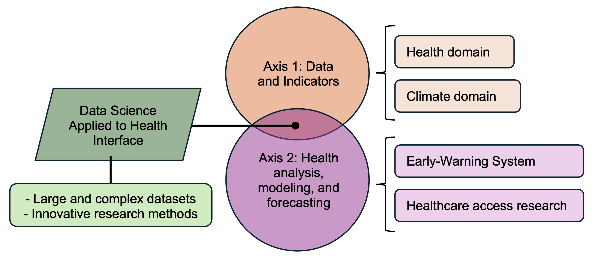

Introduction and Research Proposal
About me
- Brazilian from Rio de Janeiro
- Husband, father of two dogs and a cat
- Loves cycling and take pictures
- Researcher on Health Geography and Climate-Sensitive Diseases
- R developer
Academic formation
- BSc on Geography (2007) and Specialization on Statistics (2009). Regionalization proposal based on Census data.
- Master’s on Public Health (2017). Spatio-temporal models to study the relationship between traffic violence and income.
- Doctorate on Health Information (Fiocruz, 2021). Applications of Data Science methods on Public Health.
- Final year of a postdoc position at Inria. Machine Learning methods application on Dengue forecast.
Previous research activities
Main fields of work and projects
Data Science methods applied to Public Health challenges
Data: R packages to handle Brazilian health datasets, indicators, and climate data (self initiative)
{microdatasus}, {brpop}, {tidyrates}, {brclimr}
- Visualization: malaria and COVID-19 interactive visualization dashboards (IRD and Fiocruz)
- Analysis and modeling of climate-sensitive diseases (Fiocruz, LNCC, BSC, Inria, IRD)
Cross-border malaria transmission
- Fiocruz and IRD partnership
- Brazil (Amapá) and French Guiana border region
- Different languages and cultures, visualization is the key
- Work at MTD and a field work at Cayenne
- Publication at Journal of Medical Internet Research (JMIR, 2019)


COVID-19 Monitoring
- Fiocruz official institutional dashboard for the pandemics
- More than 10 data sources covering diverse aspects
- Data gathering, harmonization, visualization and analysis
- Challenges on data availability, standardization, and information communication
- Daily work basis, high press demand for data and insights
- Several technical notes, papers and a book chapter
- Project awarded an government prize
Postdoc project
- Montpellier University Inria Antenne, LIRMM
- Dengue inflicts an important health burden in Brazil
- 1 million new cases reported just in 2024, 214 deaths, official emergency status declaration
- Project for dengue incidence forecast on Brazil with machine learning methods
- Novel subsets approach, cluster based models with better performance
Development research project
Research interface and working axis

Research plans for the next years
- Application of Data Science methods to Public Health challenges on the Global South
- Streamline health and climate indicators projects, expansion to other countries and continents
- Usage of Machine Learning methods for data analysis and forecast, Early Warning Systems
Axis 1. Data and indicators
- Standardized methodology to build health and climate indicators
- Adoption of common time and spatial units (administrative regions)
- Application of zonal statistics
- Publication at Environmental Data Science journal (2024)


Health and climate indicators
- Provide regularly updated datasets of health and climate indicators at different hierarchical administrative geographic boundaries
- Expand coverage to other countries
- Usage of population estimates as weighting factor
- Build synthetic indicators for water cycle and droughts, warm and cold spells, and extreme events
- Work close with the ClimatSuds project
Axis 2. Early Warning System for Climate-Sensitive Diseases
- Framework proposal to prevent and early detect CSD outbreaks on Global South countries, with most vulnerable populations to climate change
- Actual EWS are limited on countries coverage, quality, interpretation and usage for decision making
- Aligned with WHO guidelines, replicable in other countries
Early Warning System for Climate-Sensitive Diseases
- Multivariate models with climate, environmental and socio-economic predictors
- Traditional and machine learning methods to forecast incidence for short and medium-time horizons (ARIMA, random forest, XGBoost, LSTM…)
- Subsets models to boost performance
- Continuous model monitoring and update (MLOps)
Early Warning System for Climate-Sensitive Diseases
- Lay an EWS framework adaptive to other regions’ contexts and society priorities
- Close work with health managers and civil society representatives for project usage and tools appropriation
Axis 2. Healthcare access research
- Study the healthcare access networks
- Observation of empirical data on the patients address and healthcare unit location
- Adaptation of Social Network Analysis (SNA) methods
- Addresses are nodes, healthcare events are links
- Metrics of centrality of healthcare units, simulations on the effect of units creation and closing
Integration with IRD
- Research aligned with the SDGs Good Health and Well-Being (3), Climate Action (13), and Partnership for the Goals (17)
- IRD equitable partnerships with the developing countries
- UMR EspaceDev expertise on earth observation and modeling of health and climate data
- ESOR group focus on environment, society, and health relationship on time and space, reach on South America, Africa and Asia countries
Thanks!
More information about me and projects at